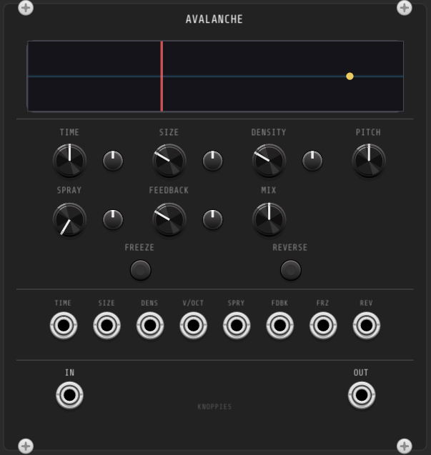
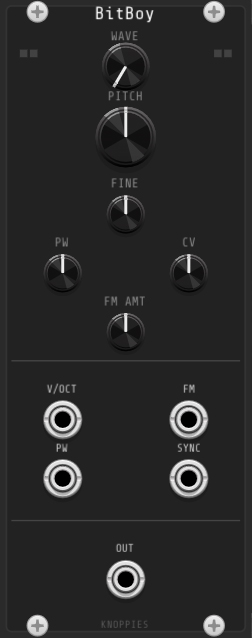
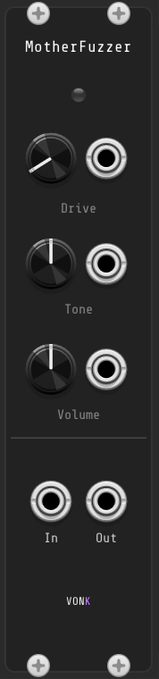
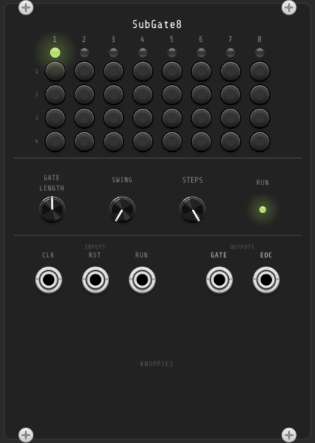
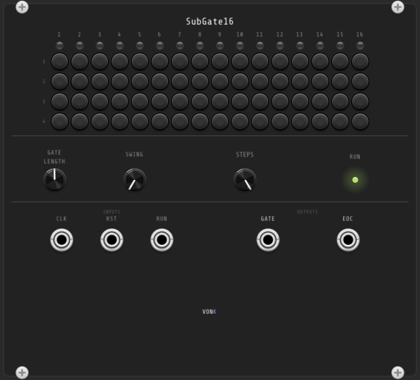
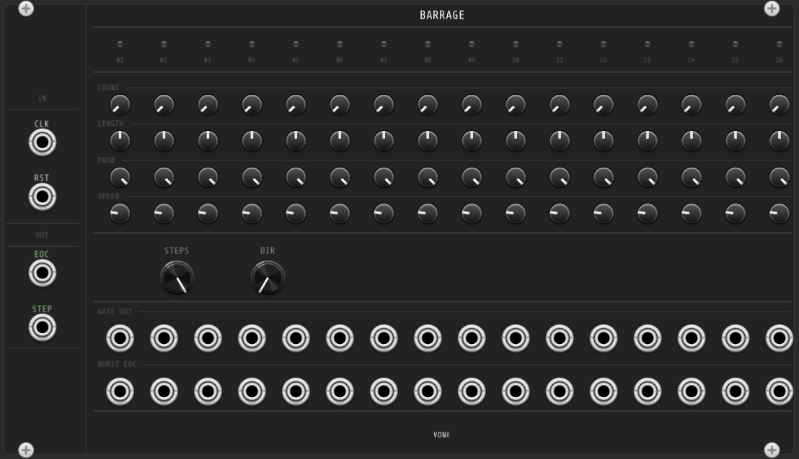
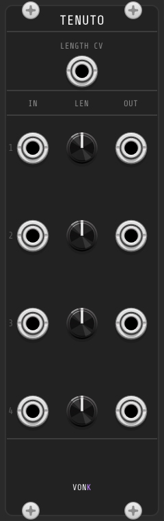
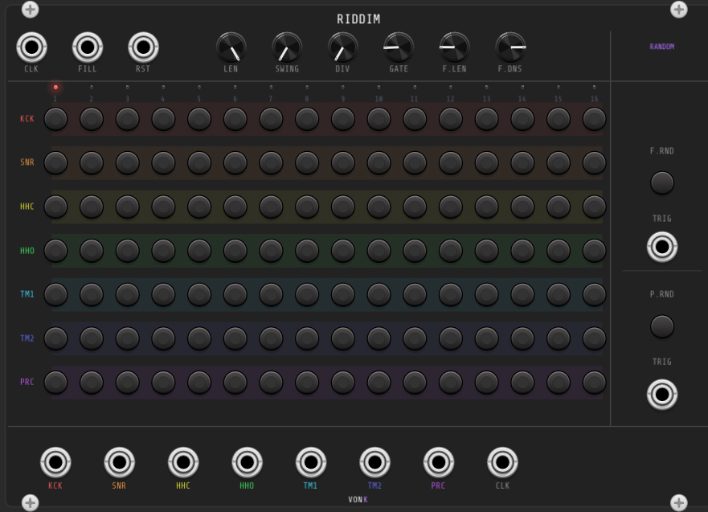
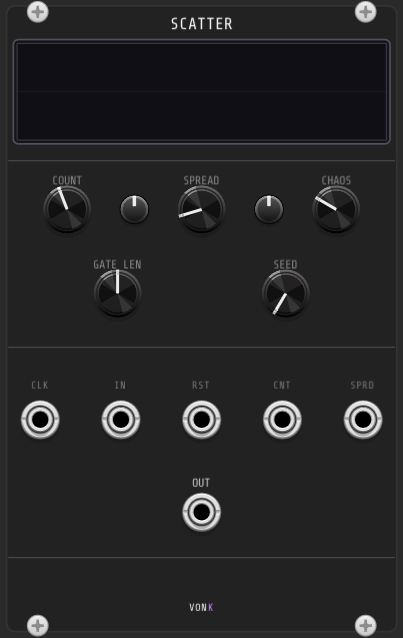

Modules — 9 available

This module is currently in alpha. Expect bugs and breaking changes — feedback and bug reports are welcome via GitHub.
Captures incoming audio into a buffer and plays it back as a cloud of overlapping grains. Each grain has its own envelope, enabling textures that range from subtle thickening to full granular cloudscapes. Pitch shifting, freezing, and reverse playback are all available per grain.

A classic 8-bit style oscillator delivering crunchy digital tones with authentic bit-crushing and NES-style noise generation. Four waveforms cover the full range of lo-fi character from punchy square basses to gritty digital noise.

A rich, musical fuzz and distortion effect with intuitive Drive, Tone, and Volume controls. Soft clipping drive from 1× to 100× paired with a low-pass tone control makes it equally at home on synth basses, leads, or drums. CV inputs on all three parameters open it up for dynamic modulation.

An 8-step gate sequencer with 4 subdivisions per step, giving 32 individually togglable triggers. Swing and gate length controls add groove and expressiveness. Compact and performance-friendly, it syncs to external clocks and fires an end-of-cycle pulse for chaining.

A 16-step gate sequencer with 4 subdivisions per step, giving 64 individually togglable triggers. The expanded step count allows longer, more complex rhythmic patterns while retaining the same swing, gate length, and clock sync features as SubGate8.
This module is currently in alpha. Expect bugs and breaking changes — feedback and bug reports are welcome via GitHub.

A 16-step sequencer where each step is a self-contained burst generator. Instead of a single gate per clock, each step fires a burst of evenly-spaced gates with independent control over count, length, probability, and speed relative to the clock.

A 4-channel variable gate length module. Takes gate or trigger inputs and re-emits each as a gate of a fixed, independently-set length — from 1ms to 2 seconds. Each channel retriggers cleanly on every rising edge.

A 7-voice, 16-step drum pattern sequencer with per-voice gate outputs and a dedicated fill mode. Swing, clock division, and one-click pattern randomization make it easy to build and vary grooves live. The fill pattern is independent of the main pattern and can be randomized at any time.
This module is currently in alpha. Expect bugs and breaking changes — feedback and bug reports are welcome via GitHub.

A polyphonic gate burst generator that turns a single trigger into a randomised cluster of gates spread across a clock-synced window. Each polyphonic channel gets its own independent burst engine and random state, producing rhythmically coherent but unpredictable fills, rolls, and ornaments.
This module is currently in alpha. Expect bugs and breaking changes — feedback and bug reports are welcome via GitHub.
Installation
- Windows — Install MSYS2, then open the MSYS2 terminal and run
pacman -S mingw-w64-x86_64-toolchain maketo install the MinGW compiler and make. - macOS — Run
xcode-select --installin Terminal to install the Xcode Command Line Tools, which includes clang and make. - Linux — Install GCC and make via your package manager, e.g.
sudo apt install build-essentialon Ubuntu/Debian.
git clone https://github.com/grant-pie/<module-name> cd <module-name>
make install